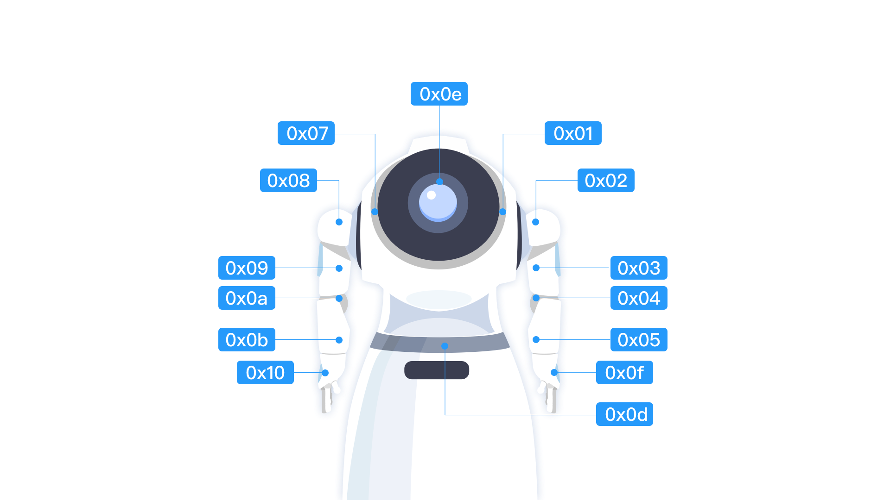

舵机服务
舵机服务提供 API 调用设备 “关节” 的能力。作为舵机服务访问代理的 ServoManager 对象，提供了舵机服务的主要 API，可通过 RobotContext 对象获取到。
ServoManager servoManager = aRobotContext.getSystemService(ServoManager.SERVICE);
获取舵机列表
获取设备拥有的舵机数量以及舵机配置参数，可通过以下代码实现：
List<ServoDevice> /* [1] */ servoDevices = servoManager.getDeviceList();
[1] 舵机集合，ServoDevice 是舵机的详细配置参数，具体包括：
| 属性 getter | 说明 |
|---|---|
| ServoDevice.id | 舵机 id |
| ServoDevice.name | 舵机名称 |
| ServoDevice.description | 舵机描述 |
| ServoDevice.minAngle | 最小可旋转到的角度 |
| ServoDevice.maxAngle | 最大可旋转到的角度 |
| ServoDevice.minSpeed | 最小的转速 |
| ServoDevice.maxSpeed | 最大的转速 |
| ServoDevice.defaultSpeed | 默认转速 |
转动舵机
当需要设备像人类一样做动作时，通过转动舵机即可实现。转动舵机可以使用相对角度转动也可以使用绝对角度转动，转动可以是单一的任务也可以是串行任务，以下将逐项介绍。
舵机使用相对角度转动时，可只指定相对转动的角度，也可指定相对转动的角度和速度、相对转动的角度和时长。
只指定相对转动的角度，通过以下代码实现：1001 号舵机旋转 90 度。
promise /* [1] */ = servoManager.rotateBy("1001", 90f) .progress(new ProgressCallback<RotationProgress>() { @Override public void onProgress(RotationProgress rotationProgress /* [2] */) { // 舵机旋转过程中会多次运行至此 } }).done(new DoneCallback<Void>() { @Override public void onDone(Void aVoid) { // 舵机旋转完成后会运行至此 } }).fail(new FailCallback<ServoException>() { @Override public void onFail(ServoException e) { // 舵机旋转出错会运行至此 } });
[1] 返回等待转动进度与结果的异步对象，通过该对象可等待或监听进度与结果以及取消转动过程。具体用法参考 Promise。
[2] 异步回调的 RotationProgress 对象描述了舵机旋转的进度信息，具体包括：
| 属性 getter | 说明 |
|---|---|
| RotationProgress.sessionId | 舵机 id |
| RotationProgress.angle | 当前已经旋转的角度 |
指定相对转动的角度和速度，通过以下代码实现：1001 号舵机以每秒 10 度的转速转动 90 度。
promise = servoManager.rotateBy("1001", 90f, 10f);
指定相对转动的角度和时长，通过以下代码实现：1001 号舵机用 10 秒时间转动 90 度。
promise = servoManager.rotateBy("1001", 90f, 10000);
舵机使用绝对角度转动时，可只指定绝对转动的角度，也可指定绝对转动的角度和速度、绝对转动的角度和时长。
只指定绝对转动的角度，通过以下代码实现：1001 号舵机旋转至 90 度位置。
promise = servoManager.rotateTo("1001", 90f);
指定绝对转动的角度和速度，通过以下代码实现：1001 号舵机以每秒 10 度的转速转动至 90 度位置。
promise = servoManager.rotateTo("1001", 90f, 10f);
指定绝对转动的角度和时长，通过以下代码实现：1001 号舵机用 10 秒时间转动至 90 度位置。
promise = servoManager.rotateTo("1001", 90f, 10000);
指定一个转动选项，可调整舵机执行单一任务的行为。
例：1001 号舵机 10 秒后将旋转到 90 度。
RotationOption /* [1] */ option = new RotationOption.Builder("1001") .setAngleAbsolute(true).setAngle(90f).setDuration(10000).build(); promise = servoManager.rotate(option);
[1] RotationOption 对象通过 RotationOption.Builder 构建，使用说明如下：
| 方法 | 说明 | 默认值 |
|---|---|---|
| Builder.constructor(servoId) | 构造时指定舵机 id | |
| Builder.setServoId(servoId) | 舵机 id | 长度为 0 的字符串 |
| Builder.setAngle(angle) | 角度 | 0 |
| Builder.setAngleAbsolute(angleAbsolute) | 转动方式的标识符 | false: 相对角度转动 |
| Builder.setDuration(duration) | 转动时长，单位：毫秒 | 0 |
| Builder.setSpeed(speed) | 转速，单位：度/秒 时长、转速同时存在，转速优先 |
0 |
指定多个转动选项，可调整舵机执行串行任务的行为，以下两种实现方式均可。
例：1001 号舵机 10 秒后将转动到 90 度的位置，之后将再耗时 10 秒旋转 360 度。
// 方式一 RotationOption option1 = new RotationOption.Builder("1001") .setAngleAbsolute(true).setAngle(90f).setDuration(10000).build(); RotationOption option2 = new RotationOption.Builder("1001") .setAngle(360f).setDuration(10000).build(); promise = servoManager.rotateSerially(option1, option2); // 方式二 option1 = new RotationOption.Builder("1001") .setAngleAbsolute(true).setAngle(90f).setDuration(10000).build(); option2 = new RotationOption.Builder("1001").setAngle(360f).setDuration(10000).build(); List<RotationOption> optionList = new ArrayList<>(); optionList.add(option1); optionList.add(option2); promise = servoManager.rotateSerially(optionList);
如果想知道当前舵机是否处于转动中，通过以下代码实现。
boolean isRotating = servoManager.servoManager("1001");
返回 true 表示 1001 号舵机正在转动。
如果想获取舵机当前的角度，通过以下代码实现。
float angle = servoManager.getAngle("1001");
释放舵机
当需要校准舵机角度时，需要先调用释放舵机的 API，使上层在校准的过程中不能再通过舵机访问代理对象 ServoManager 对舵机进行控制。
释放时可指定释放某一个，也可释放多个，以下将逐项介绍。
释放一个：释放 1001 号舵机。
promise /* [1] */ = servoManager.release("1001").done(new DoneCallback<Void>() { @Override public void onDone(Void aVoid) { // "1001" 号舵机释放完成后将运行至此，此时可开始校准操作 } }).fail(new FailCallback<ServoException>() { @Override public void onFail(ServoException e) { // 释放出错将运行至此 } });
[1] 返回等待释放结果的异步对象，通过该对象可等待结果和取消释放过程。具体用法参考 Promise。
同时释放多个舵机，通过以下两种方式均可实现。
promise = servoManager.release("1001", "1002");
List<String> servoIds = new ArrayList<>(); servoIds.add("1001"); servoIds.add("1002"); promise = servoManager.release(servoIds);
如果想知道舵机是否释放了，通过以下代码实现。
boolean isReleased = servoManager.isReleased("1001");
返回 true 表示 1001 号舵机已经释放。
舵机监听
如果想要感知舵机转动，可注册舵机监听，通过以下代码实现。
RotationListener listener = new RotationListener() { @Override public void onRotationBegan(List<ServoDevice> list /* [1] */) { // 舵机开始转动时将运行至此 } @Override public void onRotating(Map<ServoDevice, RotationProgress> map /* [2] */) { // 舵机转动过程中将多次运行至此 } @Override public void onRotationEnded(List<ServoDevice> list /* [3] */) { // 舵机转动完毕后将运行至此 } }; servoManager.registerRotationListener(listener, "1001", "1002" /* [4] */);
[1] 开始转动的舵机的集合，舵机详细信息请见 ServoDevice。
[2] 舵机及其对应的进度的集合，进度详细信息请见 RotationProgress。
[3] 旋转完毕的舵机集合。
[4] 1001 和 1002 均表示舵机编号，此处也可以写成集合的形式，具体如下：
List<String> servoIds = new ArrayList<>(); servoIds.add("1001"); servoIds.add("1002"); servoManager.registerRotationListener(listener, servoIds);
如不想再感知舵机转动，通过以下代码实现：
servoManager.unregisterRotationListener(listener);
头部角度，跟身高对照数据建议值
目前仅可以控制头部舵机（id：0x0e），头部角度范围180 - 270，下表为不同身高用户在机器人正前方50cm左右，与机器人交互时，头部舵机角度的经验值。
| 身高（cm） | 角度（°） |
|---|---|
| 180+ | 180 |
| 165-180 | 180-195 |
| 155-165 | 195-210 |
| 145-155 | 210-225 |
| 135-145 | 225-240 |
| 125-135 | 240-255 |
| 115-125 | 255-270 |
| <115 | 270 |
舵机图片
注：机器人1s没有腰部舵机0x0d

机器人舵机对照表：
| ID | NAME | 备注 |
|---|---|---|
| 0x01 | LShoulderPith | 左臂第一个舵机 |
| 0x02 | LShoulderRoll | 左臂第二个舵机 |
| 0x03 | LShoulderYaw | 左臂第三个舵机 |
| 0x04 | LElbowRoll | 左臂第四个舵机 |
| 0x05 | LElbowYaw | 左臂第五个舵机 |
| 0x07 | RShoulderPith | 右臂第一个舵机 |
| 0x08 | RShoulderRoll | 右臂第二个舵机 |
| 0x09 | RShoulderYaw | 右臂第三个舵机 |
| 0x10 | RHand | 右手舵机 |
| 0x0a | RElbowRol | 右臂第四个舵机 |
| 0x0b | RElbowYaw | 右臂第五个舵机 |
| 0x0d | HeadYaw | 腰部舵机 |
| 0x0e | HeadPitch | 头部舵机 |
| 0x0f | LHand | 左手舵机 |